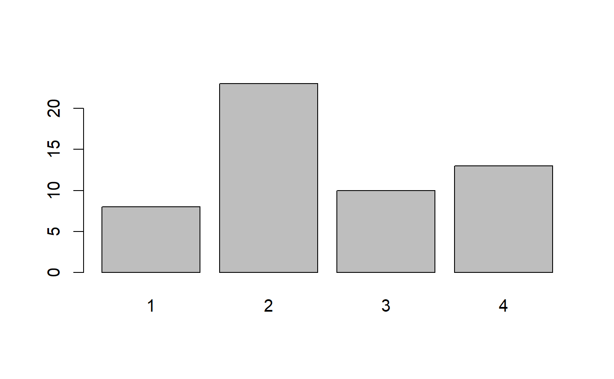

Factors
R也能把資料存為factor。
在大部分實驗中,某些解釋變數經常有不同程度的測試,稱為因子。
大意如下：
... includes trials for different levels of some explanatory variable.
The different levels are also called factors.
探索一下factors
fert = c(10,20,20,50,10,20,10,50,20)
fert = factor(fert,levels=c(10,20,50),ordered=TRUE)
levels()可以顯示factor的標籤
levels(fert)
#> [1] "10" "20" "50"
fert 的內容，如果忽略標籤本身，其實已經是數字,也就是:typeof(fert)=。
fert
#> [1] 10 20 20 50 10 20 10 50 20
#> Levels: 10 < 20 < 50
typeof(fert)
#> [1] "integer"
💡 因此, attr(x,"levels")=levels(x)。
上面的typeof(fert)說是數字,但是如果真的把它當成數字向量,又無法利用函數mean計算平均💣
mean(fert)
#> Warning in mean.default(fert): 引數不是數值也不是邏輯值：回覆 NA
#> [1] NA
必須轉換:
mean(as.numeric(levels(fert)[fert]))
#> [1] 23.33333
那麼最小值呢?
min(fert)
#> [1] 10
#> Levels: 10 < 20 < 50
❓ 為甚麼上面的求最小可以,這裡又不行?
fert = c(10,20,20,50,10,20,10,50,20)
fert = factor(fert,levels=c(10,20,50) )
min(fert)
#> Error in Summary.factor(structure(c(1L, 2L, 2L, 3L, 1L, 2L, 1L, 3L, 2L: 'min' 對因子沒有意義
探索
a <- factor(c("A", "A", "B", "A", "B", "B", "C", "A", "C"))
預期答案是factor,ok。
class(a)
#> [1] "factor"
因為a已經被編碼，預期是numeric，這裡答案直接給定integer:
typeof(a)
#> [1] "integer"
a是一個factor,所以a[]代表a的一個子集合，因此結果看起來也是類似原來a的型態：
a[1]
#> [1] A
#> Levels: A B C
驗證是不是和上面的表示方式一樣：
a
#> [1] A A B A B B C A C
#> Levels: A B C
所以，a,a[]都是類型為factor的變數。
按照之間[]和[[]]的規則，這裡會出現什麼？
a[[1]]
#> [1] A
#> Levels: A B C
出現的結果和a[1]一樣，這說明了，a的結構不是list,利用str()函數看一下確認：
str(a)
#> Factor w/ 3 levels "A","B","C": 1 1 2 1 2 2 3 1 3
總之，a[1] a[[1]] 都是Factor 沒有[ 和 [[ 的分別。這很好記，因為這個factor也是r的內建資料型態。
其他驗證如下，自行推敲：
> typeof(a[[1]])
[1] "integer"
> typeof(a[1])
[1] "integer"
> class(a[[1]])
[1] "factor"
> class(a[1])
[1] "factor"
常用來和table配合
table(a)
#> a
#> A B C
#> 4 3 2
利用summary函數的時候,這裡不再列出5個統計量:
summary(a)
#> A B C
#> 4 3 2
又有新的問題了，到底table(a),summary(a)的資料結構是什麼？
str(table(a))
#> 'table' int [1:3(1d)] 4 3 2
#> - attr(*, "dimnames")=List of 1
#> ..$ a: chr [1:3] "A" "B" "C"
str(summary(a))
#> Named int [1:3] 4 3 2
#> - attr(*, "names")= chr [1:3] "A" "B" "C"
class(table(a))
#> [1] "table"
class(summary(a))
#> [1] "integer"
又來一個讓人無言的地方，輸出樣子看起來很像，但是結構一個是類別table一個是「整數向量」，然後每個元素都是因子的發生次數，帶有因子名字，這裡是"A","B","C"。
hw
❓找回原來還沒被factor的向量。
x<-c("a","b","c")
fx<-factor(x) # 現在x是一個factor
現在假定,我們只有fx,要找回x的內容。
💡就像這樣:c("a","b","c")[c(1,1,2,3,2)] ==> a,a,b,c,b 。
factor 和函數read.csv()
read.csv() 通常產生一個data.frame的類別。但是在讀檔的時候，如果遇到字串欄位，會將字串欄位預設轉為factor欄位。
觀察carbon dioxide 對樹木的生長速率 trees91.csv [1^]
tree = read.csv("./resources/trees91.csv", header = TRUE, sep = ",");
attributes(tree)
#> $names
#> [1] "C" "N" "CHBR" "REP" "LFBM" "STBM" "RTBM" "LFNCC"
#> [9] "STNCC" "RTNCC" "LFBCC" "STBCC" "RTBCC" "LFCACC" "STCACC" "RTCACC"
#> [17] "LFKCC" "STKCC" "RTKCC" "LFMGCC" "STMGCC" "RTMGCC" "LFPCC" "STPCC"
#> [25] "RTPCC" "LFSCC" "STSCC" "RTSCC"
#>
#> $class
#> [1] "data.frame"
#>
#> $row.names
#> [1] 1 2 3 4 5 6 7 8 9 10 11 12 13 14 15 16 17 18 19 20 21 22 23 24 25
#> [26] 26 27 28 29 30 31 32 33 34 35 36 37 38 39 40 41 42 43 44 45 46 47 48 49 50
#> [51] 51 52 53 54
names(tree)
#> [1] "C" "N" "CHBR" "REP" "LFBM" "STBM" "RTBM" "LFNCC"
#> [9] "STNCC" "RTNCC" "LFBCC" "STBCC" "RTBCC" "LFCACC" "STCACC" "RTCACC"
#> [17] "LFKCC" "STKCC" "RTKCC" "LFMGCC" "STMGCC" "RTMGCC" "LFPCC" "STPCC"
#> [25] "RTPCC" "LFSCC" "STSCC" "RTSCC"
[1^]: The original spreadsheet is located at http://cdiac.ornl.gov/ftp/ndp061a/trees91.wk1.
A description of the data file is located at http://cdiac.ornl.gov/ftp/ndp061a/ndp061a.txt .
factor 和函數summary()
在CHBR這個欄位中,因為不全都是數字,因此R自動假定這是一個factor。
因此針對這個欄位summary()函數不會列出5個統計量,而是列出次數表。因為，一旦向量轉為一組factors, 5個基本統計量不再有意義。
summary(tree$CHBR)
#> Length Class Mode
#> 54 character character
#🏷 在CHBR這個欄位中,因為不全都是數字,因此R自動假定這是一個factor。
但有些欄位例如C,也是一個factor。但是,R認定為數字,這時必須手動處理。
以下將 tree$C 轉為 factor:
tree$C #🏷這是1個factor,但是轉進來的時候,被認定為數字
#> [1] 1 1 1 1 1 1 1 1 2 2 2 2 2 2 2 2 2 2 2 2 2 2 2 2 2 2 2 2 2 2 2 3 3 3 3 3 3 3
#> [39] 3 3 3 4 4 4 4 4 4 4 4 4 4 4 4 4
summary(tree$C)
#> Min. 1st Qu. Median Mean 3rd Qu. Max.
#> 1.000 2.000 2.000 2.519 3.000 4.000
tree$C <- factor(tree$C)
tree$C
#> [1] 1 1 1 1 1 1 1 1 2 2 2 2 2 2 2 2 2 2 2 2 2 2 2 2 2 2 2 2 2 2 2 3 3 3 3 3 3 3
#> [39] 3 3 3 4 4 4 4 4 4 4 4 4 4 4 4 4
#> Levels: 1 2 3 4
summary(tree$C)
#> 1 2 3 4
#> 8 23 10 13
levels(tree$C)
#> [1] "1" "2" "3" "4"
node: summary() 函數，參考table一節。
barplot(table(tree$C))

Data Frames
簡單介紹一下手動建立data.frame
3個欄位，分別是a,b,f
a <- c(1, 2, 3, 4)
b <- c(2, 4, 6, 8)
levels <- factor(c("A", "B", "A", "B"))
bubba <- data.frame(first = a,
second = b,
f = levels)
bubba
#> first second f
#> 1 1 2 A
#> 2 2 4 B
#> 3 3 6 A
#> 4 4 8 B
summary(bubba)
#> first second f
#> Min. :1.00 Min. :2.0 A:2
#> 1st Qu.:1.75 1st Qu.:3.5 B:2
#> Median :2.50 Median :5.0
#> Mean :2.50 Mean :5.0
#> 3rd Qu.:3.25 3rd Qu.:6.5
#> Max. :4.00 Max. :8.0
bubba$first
#> [1] 1 2 3 4
bubba$second
#> [1] 2 4 6 8
bubba$f
#> [1] A B A B
#> Levels: A B
data frame 的常用函數：
- head() - shows first 6 rows
- tail() - shows last 6 rows
- dim() - returns the dimensions of data frame (i.e. number of rows and number of columns)
- nrow() - number of rows
- ncol() - number of columns
- str() - structure of data frame - name, type and preview of data in each column
- names() - shows the names attribute for a data frame, which gives the column names.
- sapply(dataframe, class) - shows the class of each column in the data frame
回到之前利用read.csv讀入的data.frame : tree
# 順便看看結構
typeof(tree)
#> [1] "list"
class(tree)
#> [1] "data.frame"
is.data.frame(tree)
#> [1] TRUE
既然tree是一個list,那麼[]和[[]]的應用就和之前討論的一樣：
tree[1]
#> C
#> 1 1
#> 2 1
#> 3 1
#> 4 1
#> 5 1
#> 6 1
#> 7 1
#> 8 1
#> 9 2
#> 10 2
#> 11 2
#> 12 2
#> 13 2
#> 14 2
#> 15 2
#> 16 2
#> 17 2
#> 18 2
#> 19 2
#> 20 2
#> 21 2
#> 22 2
#> 23 2
#> 24 2
#> 25 2
#> 26 2
#> 27 2
#> 28 2
#> 29 2
#> 30 2
#> 31 2
#> 32 3
#> 33 3
#> 34 3
#> 35 3
#> 36 3
#> 37 3
#> 38 3
#> 39 3
#> 40 3
#> 41 3
#> 42 4
#> 43 4
#> 44 4
#> 45 4
#> 46 4
#> 47 4
#> 48 4
#> 49 4
#> 50 4
#> 51 4
#> 52 4
#> 53 4
#> 54 4
tree[[1]]
#> [1] 1 1 1 1 1 1 1 1 2 2 2 2 2 2 2 2 2 2 2 2 2 2 2 2 2 2 2 2 2 2 2 3 3 3 3 3 3 3
#> [39] 3 3 3 4 4 4 4 4 4 4 4 4 4 4 4 4
#> Levels: 1 2 3 4
class(tree[1]) # data.frame
#> [1] "data.frame"
class(tree[[1]]) # integer
#> [1] "factor"
typeof(tree[1]) # list
#> [1] "list"
typeof(tree$C) # integer
#> [1] "integer"
typeof(tree[[1]]) # integer
#> [1] "integer"
tree[1] 是一個list
tree[[1]] 外圍的tree[]首先被解讀為list類別,然後[1]傳到類別
[[ vs [
由typeof,class看起來
[[抽取list中的元素
[只是分割list,中的subset
Tables
除了data frame 以外,還有table 可以用來組織資料。
這裡只看怎樣建立table,分析看其他章節。
One Way Tables
table()指令:
這個指令通常用來建立因子之間的關聯表(contingency table)。參數通常是一個「因子向量」(factor vector)。
例如建立一個單因子關聯表（one way table）:
a <- factor(c("A", "A", "B", "A", "B", "B", "C", "A", "C"))
table_a <- table(a)
table_a：
table_a
#> a
#> A B C
#> 4 3 2
attributes可以看出table_a裡面有哪些帶名元素
attributes(table_a)
#> $dim
#> [1] 3
#>
#> $dimnames
#> $dimnames$a
#> [1] "A" "B" "C"
#>
#>
#> $class
#> [1] "table"
summary(table_a)
#> Number of cases in table: 9
#> Number of factors: 1
對照table(a)，直接把factor 變數，代入summary()看一下，結果是次數分配表（如下）
table(a)
#> a
#> A B C
#> 4 3 2
summary(a)
#> A B C
#> 4 3 2
問題：如果我們知道A有4,個,B有3個,C有2個,能不能直接建立table?
1. 先建立matrix
2. 再加入欄位名稱
3. 利用函數as.table()
# step 1
occur <- matrix(c(4, 3, 2), ncol = 3, byrow = TRUE)
occur
#> [,1] [,2] [,3]
#> [1,] 4 3 2
#step 2
colnames(occur) <- c("A", "B", "C")
occur
#> A B C
#> [1,] 4 3 2
#step 3
occur <- as.table(occur)
occur
#> A B C
#> A 4 3 2
attributes(occur)
#> $dim
#> [1] 1 3
#>
#> $dimnames
#> $dimnames[[1]]
#> [1] "A"
#>
#> $dimnames[[2]]
#> [1] "A" "B" "C"
#>
#>
#> $class
#> [1] "table"
Two Way Tables
這個例子中有兩個問題:第1個問題的答案有“Never,” “Sometimes,” or “Always.”
第2個問題的答案有 “Yes,” “No,” or “Maybe.”
兩個問題分別以向量a,b存放( The set of vectors “a,” and “b,” contain the response for each measurement.)
a <- c("Sometimes", "Sometimes", "Never", "Always", "Always", "Sometimes", "Sometimes", "Never")
b <- c("Maybe", "Maybe", "Yes", "Maybe", "Maybe", "No", "Yes", "No")
results <- table(a, b)
results
#> b
#> a Maybe No Yes
#> Always 2 0 0
#> Never 0 1 1
#> Sometimes 2 1 1
在表格中,可以看到同時回答 “Maybe” “Sometimes” 的個數有幾個。
這裡是另一個直接由我們知道的數據建立table的例子
sexsmoke <- matrix(c(70, 120, 65, 140), ncol = 2, byrow = TRUE)
rownames(sexsmoke) <- c("male", "female")
colnames(sexsmoke) <- c("smoke", "nosmoke")
sexsmoke <- as.table(sexsmoke)
sexsmoke
#> smoke nosmoke
#> male 70 120
#> female 65 140